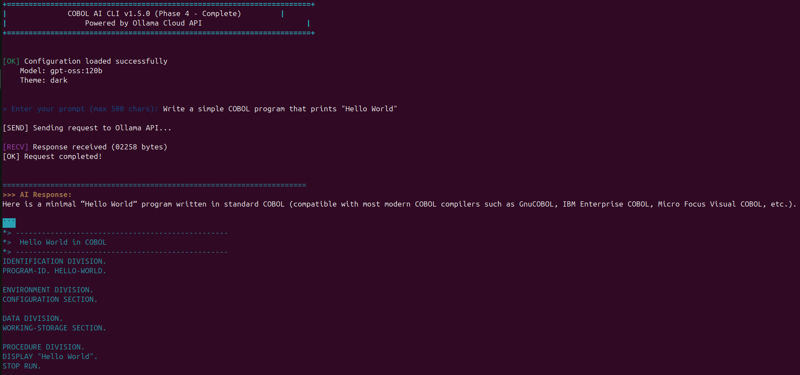
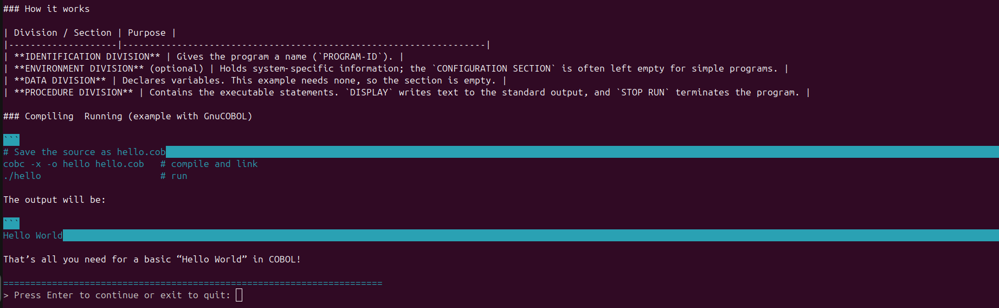
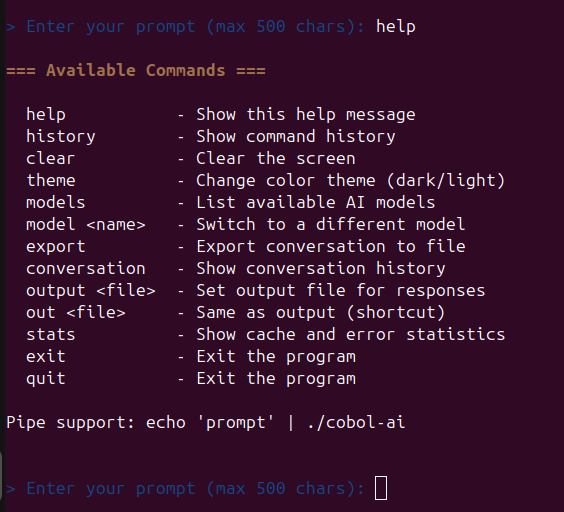

COBOLmeets thelanguage model
A complete field guide to a 2,673-line GnuCOBOL program that talks to a modern AI API — and to the engineering that made it trustworthy.
Orientation
What this program is, why a language from 1959 is a reasonable place to put an AI client, and how to get a first answer out of it.
A conversation with a mainframe accent
COBOL AI CLI is a command-line program written entirely in GnuCOBOL that sends prompts to the Ollama Cloud API and prints the model's answer. You type a question; a language designed for batch payroll runs asks a large language model on your behalf.
That sentence is the whole product, and it is worth sitting with for a
moment, because the joke and the engineering point are the same. COBOL is
not a toy here. The program has a persistent response cache, exponential
backoff keyed to HTTP status, system-keyring credential storage, per-run
file isolation so concurrent sessions cannot collide, and a 79-case test
suite that runs offline and costs nothing. Those are the properties you
would demand of any production HTTP client. They happen to be implemented
in PERFORM VARYING and PIC X(25000).
What it actually does
- One-shot mode —
./cobol-ai "What is 2+2?"prints an answer and exits. - Interactive mode — a prompt loop with history, themes, model switching and file attachment.
- File input —
file src/main.cob explain thisreads a file into the prompt. - Transcript capture —
output session.mdappends every exchange to a file. - Caching — repeated questions are answered from disk without touching the network.
The shape of the thing
Three executables cooperate. Understanding this split early makes everything later obvious, so it is worth the thirty seconds now.
| File | Language | Job |
|---|---|---|
cobol-ai | bash | Wrapper. Loads .env, assigns a run id, points the program at the helper. This is the entry point. |
cobol-ai.bin | COBOL | The program. All logic: parsing, caching, retry, display. |
cobol-ai-helper.sh | bash | Performs the actual HTTP request with curl, writes the response and status to files. |
GnuCOBOL has no HTTP client and no way to capture a subprocess's standard output. It can call the shell, and it can read files. So the COBOL side writes a prompt file, invokes the helper, and reads back a response file. Every awkward design decision in this program descends from that one constraint — and once you see it, the architecture reads as inevitable rather than strange.
Ten minutes of COBOL, for people who have never written any
You do not need to know COBOL to use this tool. You do need a little to read the rest of this book. Here is the smallest useful amount.
A COBOL program is divided into four divisions, always in this order. Think of them as: who I am, what I need from the system, what data I hold, and what I do.
IDENTIFICATION DIVISION.
PROGRAM-ID. COBOL-AI-CLI. *> who I am
ENVIRONMENT DIVISION. *> files I will open
INPUT-OUTPUT SECTION.
FILE-CONTROL.
SELECT CACHE-FILE ASSIGN TO WS-CACHE-FILE
ORGANIZATION IS LINE SEQUENTIAL.
DATA DIVISION. *> every variable, declared up front
WORKING-STORAGE SECTION.
01 WS-MODEL PIC X(50) VALUE "gpt-oss:120b".
01 WS-RETRIES PIC 9(2) VALUE 3.
PROCEDURE DIVISION. *> the actual work
MAIN-PROCEDURE.
PERFORM INITIALIZE-PROGRAM.
STOP RUN.The five ideas you need
9(4) holds 0–9999; assigning 12345 quietly loses the leading digit.WORKING-STORAGE.OCCURS 20 TIMES gives you 20 slots, indexed from 1, not 0.Fields are fixed-width boxes, and comparisons pad the shorter side
with spaces. An 11-character slice compared against a 12-character
word can never be equal — the comparison pads the slice to
"conversatio " and finds a mismatch. That exact mistake
disabled a documented command for months. You will meet it in Chapter 19.
Reference modification
COBOL's substring syntax is FIELD(start:length), one-indexed.
So WS-PROMPT(6:995) means "995 characters starting at position
6". You will see this constantly, because it is how the program parses
commands out of a typed line.
*> WS-PROMPT holds "model llama2:7b" padded to 1000 characters
MOVE FUNCTION TRIM(WS-PROMPT(6:50)) TO WS-TEMP-STRING.
*> positions 6..55 -> "llama2:7b"Installation, five ways
Pick the row that matches your situation. All five install the wrapper as the entry point — never the bare binary — for reasons that become clear in Chapter 11.
Prerequisites
| Component | Needed for | Debian / Ubuntu |
|---|---|---|
| GnuCOBOL 3.1+ | Building from source | apt install gnucobol |
| curl | Every API request | apt install curl |
| libsecret-tools | Optional: keyring credentials | apt install libsecret-tools |
1 · From source
git clone https://github.com/casimirex/cobol-ai-cli.git
cd cobol-ai-cli
cp .env.example .env # then add your API key
make all
./cobol-ai "What is 2+2?"make all produces cobol-ai.bin, which the
wrapper runs. The binary is a build artifact and is not committed, so a
fresh clone will not work until you build it.
2 · System-wide
sudo make install # /usr/local/bin
make install PREFIX=$HOME/.local # or somewhere you own3 · Debian package
make deb
sudo dpkg -i build/cobol-ai-cli_*.debThe package declares libcob4 and curl as
dependencies and recommends libsecret-tools. It installs all
three executables into /usr/bin.
4 · Container
make docker
docker run --rm -e AI_OLLAMA_API_KEY=... cobol-ai-cli "What is 2+2?"
# keep the cache and history between runs
docker run --rm -v cobol-ai-state:/home/cobol/.local/state \
-e AI_OLLAMA_API_KEY=... cobol-ai-cli "your prompt"A two-stage build: GnuCOBOL compiles in the first stage, and the runtime
image carries only libcob4, curl and the three
executables — about 192 MB. It runs as an unprivileged user.
5 · Source tarball
make dist # build/cobol-ai-cli-1.11.2.tar.gzSelf-contained: unpack it anywhere, run make all and the full
test suite passes from the extracted tree. It deliberately excludes
.env.
Giving it a key
Three sources, checked in this order:
| # | Source | How |
|---|---|---|
| 1 | Environment | export AI_OLLAMA_API_KEY=... — also covers anything the wrapper exported from .env |
| 2 | System keyring | secret-tool store --label='COBOL AI CLI' service cobol-ai-cli key api-key |
| 3 | Neither | A clear error naming the secret-tool command |
The wrapper exports .env into the environment, so a key left
in .env is indistinguishable from one you exported yourself
and will win over the keyring. To use the keyring, remove the key from
.env.
Your first conversation
Here is exactly what the program prints, captured from a real run — not reconstructed from memory.
$ ./cobol-ai "What is 2+2?"
+======================================================================+
| COBOL AI CLI v1.11.2 |
| Powered by Ollama Cloud API |
+======================================================================+
[OK] Configuration loaded successfully
Model: gpt-oss:120b
Theme: dark
[SEND] Sending request to Ollama API...
| Loading... /
[RECV] Response received (00303 bytes)
[OK] Request completed!
======================================================================
>>> AI Response:
2 + 2 = 4.
======================================================================
Session Statistics:
Cache Hits: 00000
Cache Misses: 00001
Hit Rate: 00000%Run the identical command again and the middle disappears — no
[SEND], no spinner, no network:
[CACHE HIT] Using cached response
...
Cache Hits: 00001
Hit Rate: 00100%Interactive mode
Run it with no arguments and you get a prompt loop. This is the mode most of the book concerns itself with, because it is where the commands live.

[OK] configuration summary, the
[SEND] / [RECV] / [OK] status
icons, and the response with its fenced code block highlighted in cyan.
Note the byte count — 02258 bytes — printed before parsing.
Captured at v1.5.0; the banner reads differently today, but every element
shown is still present.
> Press Enter to continue or exit to quit:
— the prompt that separates one exchange from the next. Getting that
literal apostrophe in 'exit' through the shell safely is
Chapter 12's problem.Driving it
Every command, every mode, every flag — what it does, what it writes to disk, and where it will surprise you.
The command surface
Fourteen commands. Type help to see them from
inside the program.

help, as of v1.5.0. A useful
historical artifact: this listing predates file,
cache clear and version, all of which appear in
the table below. It also shows conversation — a command that,
at the moment this screenshot was taken, silently did nothing. See
Chapter 19.| Command | Does | Touches disk? |
|---|---|---|
help | List commands | — |
version | Version, model, endpoint, state dir, resolved helper path | — |
history | Show previous prompts | reads history.txt |
clear | Clear the screen | — |
theme | Show themes | — |
theme <name> | Switch to dark or light | writes theme.txt |
models | List the six known models | — |
model <name> | Switch model for subsequent requests | — |
conversation / conv | Show this session's exchanges with timestamps | — |
export | Write the conversation to a text file | writes export.txt |
output <file> | Append every future exchange to a file | writes your file |
output | Report the current output file | — |
output off | Stop appending | — |
stats | Cache hits, misses, hit rate, error count | — |
cache clear | Empty the cache in memory and on disk | deletes cache.dat |
file <path> [question] | Attach a file's contents to a question | reads your file |
exit / quit | Leave, saving the cache | writes cache.dat |
Commands are matched against the typed line before anything is sent to the model. Anything that is not a command becomes a prompt. That is a deliberate trade: it keeps the interface frictionless, but it means a command that fails to match is silently forwarded to the API as a question. Two commands shipped in exactly that broken state, and the only symptom was a slightly confused answer.
Working with files
Two independent features that together turn the tool from a chat toy into something usable on real code.
File input
# one-shot
./cobol-ai "file src/main.cob explain the cache eviction logic"
# interactive
> file README.md summarise the setup steps
# question is optional
> file config.jsonThe file is read, capped at 10,000 characters, and wrapped into the prompt with explicit delimiters so the model can tell your question from the file:
explain the cache eviction logic
--- BEGIN FILE: src/main.cob ---
IDENTIFICATION DIVISION.
...
--- END FILE ---- Longer files are truncated with a visible warning, never silently.
- An unreadable path is reported and no request is made.
- The attached contents are part of the cache key — the same question about a different file is a different entry.
Output file
> output session.md # start appending
> output # which file am I using?
> output off # stopEach exchange is appended with a timestamp and the model name:
=== 2026-08-07 13:17:12 | model: gpt-oss:120b ===
> Name one benefit of COBOL in one short sentence.
COBOL excels at reliably processing massive volumes of business data.For four releases this command printed "Responses will be saved to
this file" and saved nothing — the paragraph behind it was a
single CONTINUE statement. Chapter 19.
Pipes, scripting and exit behaviour
The tool is usable from scripts, with a couple of sharp edges worth knowing.
# pipe a prompt in
echo "Summarise this" | ./cobol-ai
# drive interactive mode from a heredoc
printf 'What is 2+2?\n\nmodel llama2:7b\nWhat is 3+3?\n\nexit\n' | ./cobol-aiAfter each answer the program asks Press Enter to continue or exit
to quit. When scripting, that prompt consumes a line. If you forget
the empty line between prompts, your next question gets eaten as
the answer to "press enter" — which looks exactly like the program
ignoring your input.
Concurrency
Two sessions can run at once safely. Each gets a private set of scratch files keyed by a run id, so neither can read the other's prompt or response. This was not always true, and the failure mode was memorable — see Chapter 16.
Inside the machine
How a request actually travels, where every byte of state lives, and why each subsystem is shaped the way it is.
Architecture at a glance
One compilation unit, assembled from eighteen copybooks, driven by a bash wrapper, reaching the network through a bash helper.
Why copybooks
main.cob holds only the skeleton — file control entries, the
record descriptions, and MAIN-PROCEDURE. Everything else is
pulled in with COPY from src/copybooks, split by
concern: ws-*.cpy for data, pd-*.cpy for
paragraphs.
| Copybook | Holds |
|---|---|
ws-config | Credentials, keyring buffers, retry schedule, runtime paths, version |
ws-cache | Cache table, on-disk record layout, hashing state |
ws-errors | Error state and the eight error-code constants |
ws-http | Request/response buffers, JSON scan cursors |
ws-io | Prompt, attached file, pipe capture, output file |
ws-ui | Colours, banner fields, spinner frames, highlighting |
ws-state | Run mode, history, conversation, model table |
pd-config | Path resolution, config loading, validation, keyring lookup |
pd-http | Payload, retry loop, status classification, JSON parsing |
pd-cache | Key building, lookup, storage, persistence, clearing |
pd-fileio | File attachment, prompt composition, output file |
pd-runmode | Pipe/argument detection, the prompt loop, command dispatch |
pd-ui | Banner, themes, help, response rendering, syntax highlighting |
…plus pd-errors, pd-history, pd-conversation, pd-models, pd-cleanup | |
1. MAIN-PROCEDURE must stay the first paragraph in the
PROCEDURE DIVISION — control falls into whatever comes first,
and its STOP RUN is what stops execution running on into the
copied paragraphs.
2. Everything else is reached by PERFORM, and there is
no PERFORM … THRU or GO TO anywhere in the
program, so the order of the COPY statements carries no
meaning.
Copybooks are textual includes. This is file-level organisation, not
compilation-unit isolation. True separate modules would mean
CALL between programs with all shared state passed through
LINKAGE — a rewrite, not a refactor, and of little value for
a single-binary CLI.
Anatomy of a request
Follow one question from keystroke to printed answer. Fourteen steps, three processes, six files.
| # | Where | What happens |
|---|---|---|
| 1 | wrapper | Source .env, export COBOL_AI_RUN_ID=$$ and COBOL_AI_HELPER |
| 2 | COBOL | INIT-PATHS — resolve state dir, build per-run scratch paths, locate the helper |
| 3 | COBOL | Load config; if no key in the environment, query the keyring |
| 4 | COBOL | Validate: key present and ≥10 chars, URL starts with http, model non-blank |
| 5 | COBOL | Load cache from disk, dropping entries older than 7 days |
| 6 | COBOL | COMPOSE-PROMPT — the typed prompt, or question + attached file |
| 7 | COBOL | BUILD-CACHE-KEY — hash model|prompt; look it up |
| 8 | COBOL | Hit? Print and skip to 13. Miss? Continue. |
| 9 | COBOL | Write the prompt to …-prompt.txt; invoke the helper with the scratch paths in its environment |
| 10 | helper | Resolve key and model, JSON-escape the prompt, curl, record the HTTP status |
| 11 | COBOL | Read the status; parse "response" out of the JSON |
| 12 | COBOL | Failure? Classify the status — retry with backoff, or stop with a reason |
| 13 | COBOL | Clean escape sequences, highlight code fences, print |
| 14 | COBOL | Append to the output file, record in the conversation, delete scratch files |
The JSON problem
GnuCOBOL has no JSON support, so both directions are hand-rolled. Outbound, the helper escapes the prompt in bash — and the order matters more than it looks:
json_escape() {
local s="$1"
s="${s//\\/\\\\}" # backslash FIRST — or it re-escapes its own output
s="${s//\"/\\\"}"
s="${s//$'\t'/\\t}"
s="${s//$'\r'/}"
s="${s//$'\n'/\\n}"
printf '%s' "$s"
}Inbound, the COBOL side scans for "response" character by
character, tracking escaped quotes so that a \" inside the
answer does not terminate the scan early.
The escape-cleaning routine handles only four \u sequences —
<, >, & and ".
That sounds fragile until you check what the API actually returns: raw
UTF-8, not \u escapes. Accented text, em dashes, degree signs
and emoji all pass through untouched. Verified, not assumed:
it's 5 °C — naïve café 😀 round-trips correctly.
The response cache
Twenty entries, seven-day expiry, persisted to disk, and the subsystem that taught this project the most about testing.
Why a hash at all
The fingerprint field is 64 characters. The model name alone eats 13 of
them, so storing a raw prefix meant that two prompts sharing an opening
phrase collided. The rolling hash covers the entire key — including
an attached file's full contents — while the readable tail is kept purely so
a human can eyeball cache.dat.
Eviction and expiry
- Full table — entries shift down by one and the newest lands in slot 20.
- Expiry — on load, any entry whose date is more than 7 days old is dropped.
- Corruption — malformed records are skipped; a garbage file yields an empty cache, not a crash.
- Newlines — a response containing a literal newline is never written, because
LINE SEQUENTIALwould split the record.
Both the lookup and the store used WS-CACHE-PROMPT-HASH(1)
as scratch space for the current key — but slot 1 is also a real cache
entry. The search loop therefore compared slot 1 against itself on its
first iteration and always reported a hit. Every prompt after the first
received the first prompt's answer. Asking "Name the capital of France"
returned "2 + 2 = 4." The non-persistence was masking it: one query per
process meant the table was always empty on lookup. Making the cache
persistent without fixing this would have shipped wrong answers to
everyone.
Retry, and knowing what went wrong
Not every failure deserves a second attempt. Telling them apart requires the HTTP status — which for a long time nobody captured.
A wrong API key used to cost four attempts and roughly seven seconds of backoff before reporting the useless message "All retry attempts exhausted". Today:
[SEND] Sending request to Ollama API...
ERROR: API returned HTTP 401
[ERR] Request failed, not retrying
HTTP 401 unauthorized - check AI_OLLAMA_API_KEY
elapsed: 0sThe sleep command was built with STRING "sleep " … INTO
WS-HELPER-CMD — and STRING overwrites from position 1
while leaving the rest of the field intact. The result was
sleep 1 followed by the tail of the previous API
command, including an unbalanced quote. The shell rejected the whole thing
and no wait ever happened. Measured: three retries in 0 seconds.
Against a real rate limit that is hammering the endpoint as fast as the
loop runs — precisely what backoff exists to prevent. The existing tests
could never have caught it: they counted attempts, which were always
correct. Only elapsed time reveals it.
Credentials, quoting and the shell boundary
Every character that crosses from user input into a shell command is a place to be careful. This program has exactly one such path, and two barriers guarding it.
Where the key comes from
Both the COBOL program and the helper consult the same sources in the same order. That symmetry matters: implementing keyring support only in the COBOL side would have lit up the banner while the request still failed for want of a key.
# store once
secret-tool store --label='COBOL AI CLI' service cobol-ai-cli key api-key
# then remove AI_OLLAMA_API_KEY from .env, or it will keep winningCOBOL cannot capture a subprocess's output, so its keyring lookup passes
through a temporary file — created under umask 077 and
deleted immediately after reading. That is a brief single-user-readable
window on disk. The bash helper reads the keyring directly with no temp
file. The asymmetry is a real cost of the language, not an oversight.
The one injection surface
The model name is the only user-controlled value that reaches a shell command string, where it sits inside single quotes. Two barriers stand in front of it:
- Character rejection — any name containing
' ; ` $ & |is refused outright. - Whitelist — the name must match one of six known models.
The first injection probe used a marker path under the test directory,
which made the payload longer than WS-MODEL's
PIC X(50). It was truncated into harmlessness and the test
passed without exercising anything. With a short payload and the
whitelist removed, model x';touch /tmp/IJ2;echo ' executes.
The whitelist was doing all the work; the test was doing none. Both are
fixed — and this is why the book keeps insisting on mutation checks.
Where your state lives
Persistent things survive reboots and belong to you. Scratch things belong to a single request and disappear with it.
| File | Location | Lifetime |
|---|---|---|
cache.dat | $XDG_STATE_HOME/cobol-ai-clior ~/.local/state/cobol-ai-clicreated 0700 | 7-day entries |
history.txt | Persistent | |
theme.txt | Persistent | |
errors.log | Appended forever | |
export.txt | Overwritten by export | |
…-prompt.txt | /tmp/cobol-ai-<runid>-* | One request |
…-response.json | ||
…-status.txt | ||
…-key.txt |
The run id comes from the wrapper's shell PID. Invoke the binary directly and it derives one from the clock plus a random suffix, so isolation does not depend on going through the wrapper.
Every file once had a fixed name. Two overlapping sessions therefore shared one prompt file and one response file:
run A asked: ALPHA-QUESTION
run A got: ECHO[BETA-QUESTION] ← run B's answerNothing in the output suggested anything was wrong. It reads as a normal answer to a different question. On a shared machine the same fault locked out every user but the first — most cruelly for the key file at mode 0600, where a second user's keyring lookup failed to write, silently produced an empty key, and reported "AI_OLLAMA_API_KEY not set" while their key sat safely in the keyring.
The craft
How this program came to be trustworthy, and the sixteen defects that taught it. This is the part worth reading even if you never run COBOL.
A test suite that can actually fail
The suite began as six tests, five of which were
echo statements that passed unconditionally. It reported green
throughout the period the cache was returning other people's answers.
run_test "config-module" "echo 'Testing configuration loading...'"A sixth checked $? after a command substitution, so it could
never fail either. Today there are 79 tests, and three properties make them
worth having.
1 · Hermetic and free
The whole suite runs offline and costs nothing. A fake API key, a base URL
pointing at a dead port, and — critically — the file-backed cache, which
lets a seeded cache.dat answer queries with no network at all.
Cache-miss paths run the CLI from a directory containing a stub
cobol-ai-helper.sh, since the program invokes the helper by
relative path. XDG_STATE_HOME is redirected into
test-output/, so a run never touches your real cache or
history.
2 · Assertions on behaviour, not shape
An early test verified that the selected model reached the request by grepping the source for a string. It passed while the feature was broken, because the same string appeared on an unrelated line. Replaced with a stub helper that records what it actually received.
3 · Every test is mutation-checked
This is the discipline that makes the rest mean anything. For each fix, the bug is deliberately reintroduced and the suite must fail — and fail on the test that claims to cover it.
| Mutation | Tests that failed |
|---|---|
| Restore the slot-1 cache aliasing | false-hit, prefix-collision |
| Remove the cache load at startup | 4 cache tests |
| Remove the TTL check | expiry |
Helper re-sources .env | environment-precedence |
| Stop forwarding the model | model-command |
| Un-clear the sleep buffer | backoff timing |
LOG-ERROR writes to the history file | history preservation |
| Helper path back to CWD-relative | both installation tests |
| Restore the 5-vs-6 model loop | every-advertised-model |
| Remove both injection barriers | injection, unknown-model |
Drop the helper from the .deb | deb contents |
Ship .env in the tarball | secrets |
Two new tests asserted on the previous test's log. Because
begin_test reassigns the log path, they read a file that did
not exist — and one passed spuriously, since the failing
grep returned non-zero straight into the else
branch. The exact always-green failure mode this whole effort set out to
eliminate, reproduced by the person eliminating it. Mutation testing is
what surfaced it.
A gallery of sixteen real defects
Every one of these shipped. Every one was found by asking a question nobody had asked before. Read them as a checklist for your own code.
Class one — the comparison that cannot be true
COBOL pads the shorter operand. Three separate bugs, one root cause.
| Where | Wrote | Consequence |
|---|---|---|
conversation dispatch | (1:11) = "conversation" | 12-char word vs 11-char slice — the documented command was sent to the API as a question |
| Model validation | UNTIL WS-JSON-I > 5 | Table holds 6 — llama3:2b was advertised by models and rejected by model |
| Backoff schedule | 2 ** WS-CURRENT-RETRY | Counter already 1, giving 2/4/8s instead of the documented 1/2/4 |
Fixed Bounds now reference declared sizes;
comparisons use FUNCTION TRIM. A sweep confirmed no others
remain — and the scanner was validated against planted canaries first,
so "no results" means something.
Class two — declared but never wired
| Feature | Reality |
|---|---|
output <file> | WRITE-TO-OUTPUT-FILE was a CONTINUE stub. Printed "Responses will be saved" and saved nothing. |
| Keyring credentials | LOAD-ENCRYPTED-CREDENTIALS set a flag to "N" and returned. The README advertised keyring storage; the banner had an "(encrypted credentials)" branch on a condition that could never be true. |
version | An 88-level constant with no dispatch. Typing it sent "version" to the model. |
| HTTP status | WS-LAST-HTTP-STATUS had exactly one reference in 1,700 lines: its own declaration. |
Fixed All four implemented. A test now asserts every declared command constant is dispatched somewhere.
Class three — the buffer that was never cleared
STRING … INTO overwrites from position 1 and leaves the rest of
the field untouched. Used on a field that still holds a longer previous
value, the tail survives.
Severe The retry sleep inherited
the tail of the previous API command, including an unbalanced quote. Backoff
silently never ran.
Fixed A sweep of every STRING … INTO
site found the rest to be latent rather than active — the export loop clears
its record each iteration — so they were left alone rather than churned.
Class four — the wrong file
LOG-ERROR opened the command-history file with
OPEN OUTPUT, which truncates. A single API error replaced your
saved history with error text:
before: after one 401:
question one ERROR [2026080715063560+05]
question two Code: - HTTP 401 unauthorized...Startup errors were harmless only because the filename variable is still
blank that early — which is exactly why it went unnoticed for so long.
Fixed Errors append to their own
errors.log.
Class five — environment and path assumptions
- The helper re-sourced
.envon every call, overriding the caller. No setting could be changed at runtime — which is whymodel <name>changed the banner and the cache key but never the actual request. - The helper was invoked as
./cobol-ai-helper.sh, relative to the working directory.make installtherefore produced an installation that failed every request from any directory but the repo root. - Fixed
/tmpfilenames let concurrent runs trade answers and locked out every user but the first. - Invalid JSON — the helper escaped
"but not backslashes and left raw newlines in the payload, so any multi-line prompt produced a malformed request.
Class six — documentation that drifted
- The banner reported v1.8.0 for four releases — the copybook refactor moved it, and version bumps kept editing the old location.
- The README's "Sample Output" showed a v1.0.0 banner and an
AI:prefix that appears nowhere in the source. - Screenshot captions described the wrong modes entirely — written without opening the images.
Fixed One version constant, read by both the
banner and the version command, with a test asserting they
agree.
Sixteen defects, and not one was found by reading code looking for bugs. Every single one surfaced from asking a new kind of question: does the cache return the right thing? do the tests test? does the model reach the request? does install work? what does concurrency do? what does the banner say? When a question stops finding bugs, change the question — not the effort.
Changing this program safely
A short procedure, earned the hard way.
- Run the suite first. Know it was green before you touched anything.
- Write the failing test before the fix. If you cannot make it fail, you do not yet understand the bug.
- Assert on behaviour, not source text. Grepping the source for a string is not a test.
- Mutate to verify. Reintroduce the bug; confirm the right test fails. Skip this and you may have written another
echo. - Check the timing, not just the count. The backoff bug hid behind a correct attempt count for four releases.
- Update the docs in the same commit. Every drift in this book began as a fix that did not.
make all # build (needs -I src/copybooks; the Makefile does it)
./tests/test-runner.sh # 79 tests, offline, ~2 minutes
make lint # syntax check only
make version # what the binaries will reportThere is no CI. Seventy-nine mutation-checked tests run only when someone remembers to run them — and the recurring failure mode in this codebase is documented behaviour silently ceasing to work. The suite needs no secrets, so a workflow would be straightforward. It is the most valuable unbuilt thing in the project.
Reference
The tables you will actually come back for.
Environment, errors and targets
Environment variables
| Variable | Purpose | Default |
|---|---|---|
AI_OLLAMA_API_KEY | Credential | required |
AI_OLLAMA_BASE_URL | API endpoint | https://ollama.com |
AI_OLLAMA_DEFAULT_MODEL | Model | gpt-oss:120b |
AI_OLLAMA_TIMEOUT | Request timeout (ms) | 60000 |
XDG_STATE_HOME | Where persistent state lives | ~/.local/state |
COBOL_AI_RUN_ID | Scratch-file suffix | wrapper's PID |
COBOL_AI_HELPER | Explicit helper path | beside the wrapper |
COBOL_AI_RESPONSE_FILE | Where the helper writes the body | per-run scratch |
COBOL_AI_STATUS_FILE | Where the helper writes the status | per-run scratch |
COBOL_AI_HELPER_DRY_RUN | 1 resolves config and makes no request | unset |
Error codes
| Code | Name | Typical cause |
|---|---|---|
| 0 | ERR-OK | — |
| 1 | ERR-INVALID-CONFIG | Missing/short key, bad URL, 401/403/404 |
| 2 | ERR-NETWORK | DNS, refused, timeout (status 000) |
| 3 | ERR-API | 429, 5xx, other 4xx |
| 4 | ERR-PARSE | 200 with no usable body |
| 5 | ERR-CACHE | Cache I/O |
| 6 | ERR-TIMEOUT | Request exceeded the timeout |
| 7 | ERR-RETRY-EXHAUSTED | All retryable attempts used |
| 8 | ERR-FILE-IO | Prompt/output file could not be written |
Make targets
| Target | Does |
|---|---|
all | Build bin/cobol-ai-cli and cobol-ai.bin |
test | Build, then run all 79 tests |
lint | Syntax check only |
debug | Build with -g |
version | Print the version from WS-VERSION |
install / uninstall | Honours PREFIX, default /usr/local |
deb · docker · dist | Package, image, source tarball |
clean | Remove binaries, build/, C intermediates |
Troubleshooting
| Symptom | Cause | Fix |
|---|---|---|
AI_OLLAMA_API_KEY not set | No key anywhere | Set the variable or store it in the keyring |
cobol-ai.bin: No such file | Never built, or make clean ran | make all |
./cobol-ai-helper.sh: not found | Bare binary run from elsewhere | Use the wrapper, or set COBOL_AI_HELPER |
HTTP 401 unauthorized | Bad key | Check it; the program will not retry this |
| Cache hit rate stuck at 0% | Prompts differ, or model changed | The model is part of the key |
| Answer to the wrong question | Pre-v1.5.1 cache | Upgrade, then cache clear |
Afterword: what a joke project taught
An AI client in COBOL is funny for about ten seconds. What remains after that is a small, ordinary program with the same problems every program has — and a record of how they were found.
The defects in Chapter 15 are not COBOL defects. A cache that returns the wrong entry, a retry loop that never sleeps, an error handler that truncates the wrong file, an installer that produces something that cannot run, a test suite that passes unconditionally, documentation describing a version four releases old — you have met all of these in other languages, and you will meet them again.
What is unusual is only that they were all found, one after another, by
refusing to accept that a feature worked because it was documented as
working. The cache said "20-entry cache" and returned other people's
answers. The README said "keyring storage" and the paragraph was three lines
that did nothing. make install said "Installation complete" and
produced something broken from every directory on the machine.
The habit worth taking from this book is not COBOL, and not even testing. It is this: when something claims to work, make it prove it — with a measurement that would look different if the claim were false. Count the seconds, not the attempts. Read the file, not the message. Run the installer, do not inspect it. Open the screenshot before writing its caption.
The program still has no CI, its export command only writes text despite constants suggesting otherwise, and a handful of declarations remain that nothing reads. Those are written down rather than quietly omitted, because a book that only lists victories is the same kind of claim as a test that only passes.
Every figure and measurement here came from the running program.